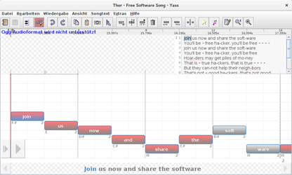

Yass
Dieser Artikel wurde für die folgenden Ubuntu-Versionen getestet:
Ubuntu 16.04 Xenial Xerus
Zum Verständnis dieses Artikels sind folgende Seiten hilfreich:
Yass  ist ein Java-Programm speziell für Karaoke-Songs. Diese können mit dem Editor erstellt und überarbeitet und z.B. die Tonlängen und -höhen korrigiert werden. Mit diesem mächtigen Programm kann man ganze Sammlungen schnell und einfach verwalten. Songinformationen können mit Covern, Hintergrundbildern und Videos abgerundet und über die Filtergruppen können unter anderem doppelte Lieder und fehlende Videos ausgemacht werden. Die Songliste kann man im Abschluss ausdrucken um sie für die nächste Karaoke-Party verwenden zu können. Ein weiterer Editor ist unter Performous - Composer zu finden.
ist ein Java-Programm speziell für Karaoke-Songs. Diese können mit dem Editor erstellt und überarbeitet und z.B. die Tonlängen und -höhen korrigiert werden. Mit diesem mächtigen Programm kann man ganze Sammlungen schnell und einfach verwalten. Songinformationen können mit Covern, Hintergrundbildern und Videos abgerundet und über die Filtergruppen können unter anderem doppelte Lieder und fehlende Videos ausgemacht werden. Die Songliste kann man im Abschluss ausdrucken um sie für die nächste Karaoke-Party verwenden zu können. Ein weiterer Editor ist unter Performous - Composer zu finden.
| Yass |
|  |
| Editor |
Installation¶
Von der Projektseite  die aktuelle Version des Programms (z.B. yass-1.7.1.jar) herunterladen und über den Befehl
die aktuelle Version des Programms (z.B. yass-1.7.1.jar) herunterladen und über den Befehl
java -jar yass-1.7.1.jar
die Anwendung starten [1] [2]. Auf Wunsch kann ein Menüeintrag [3] vorgenommen werden. Hier sollte man im Vorfeld das Programm in einen eigenen Ordner im Homeverzeichnis kopieren z.B. ~/Yass.
Hinweis!
Fremdpakete können das System gefährden.
| Konfiguration |
Konfiguration¶
Beim ersten Programmstart werden die Programmordner festgelegt. Hier die entsprechenden Ordner für die Cover, Playlisten und Songs manuell hinterlegen. In den Grundvorgaben sind dies die Verzeichnisse ~/Songs, ~/Playlists und ~/Cover.
Yass speichert alle Einstellungen, Vorschaubilder, und die Liste mit den Songs im Odner ~/.yass.
Hinweis:
Die Songs von Performous oder USDX sind im Homeverzeichnis unter ~/.ultrastar/songs bzw. ~/.ultrastardx/songs abgelegt.
Bedienung¶
Nach der Grundkonfiguration startet das Programmfenster und alle vorgefundenen Inhalte der Bibliothek werden angezeigt. Über einen  Linksklick oder
Linksklick oder  Rechtsklick werden die Aktionen innerhalb des Programms ausgeführt. So wählt man mit ersterem den gewünschten Song aus und mittels der anderen Maustaste öffnet sich ein Kontextmenü. Hier können Metainformationen, wie z.B. das Genre oder das Erscheinungsjahr, angepaßt werden. Auf diesen Weg kann man u.a. eigene Editionen erstellen und Titel entsprechend sortieren. Hilfreich ist die Möglichkeit die Ansicht zu ändern. Über "Ansicht → Details" kann man z.B. erkennen bei welchen Songs die Daten noch nicht komplett erfaßt worden sind.
Rechtsklick werden die Aktionen innerhalb des Programms ausgeführt. So wählt man mit ersterem den gewünschten Song aus und mittels der anderen Maustaste öffnet sich ein Kontextmenü. Hier können Metainformationen, wie z.B. das Genre oder das Erscheinungsjahr, angepaßt werden. Auf diesen Weg kann man u.a. eigene Editionen erstellen und Titel entsprechend sortieren. Hilfreich ist die Möglichkeit die Ansicht zu ändern. Über "Ansicht → Details" kann man z.B. erkennen bei welchen Songs die Daten noch nicht komplett erfaßt worden sind.
Die einzelnen Punkte beinhalten:
| YASS | |
| Menüpunkt | Beschreibung |
| "Datei" | Songs bearbeiten, Metadaten und Bibliothek verwalten. |
| "Bearbeiten" | Suche, Metadaten bearbeiten... |
| "Ansicht" | Verschiedene Ansichtsmodi wählen zur besseren Übersicht. |
| "Wiedergabe" | Lieder abspielen und Wiedergabelisten verwalten |
| "Extras" | Spuren verwalten und Einstellungen vornehmen |
Hinweis:
Die Steuerungsmöglichkeiten innerhalb der unterschiedlichen Programmteile entnimmt man der Hilfe, welche mit F1 aufgerufen wird.
| Einstellungen |
Einstellungen¶
Im Programm gibt es einige Einstellungsmöglichkeiten. Diese sind über "Extras → Einstellungen" zu erreichen.
| Einstellungen | |
| Rubrik | Beschreibung |
| "Bibliothek" | Pfade definieren, Kodierung und Dateitpen festlegen et cetera |
| "Metadaten" | Vordefinierte Edition anpassen. |
| "Fehlerüberwachung" | Vorgabewerte (z.B. Größe des Covers) anpassen. |
| "Editor" | Optische Vorgaben, Steuerung und Rechtschreibung. |
Editor¶
Der Editor ist sehr umfangreich von seinen Funktionen her. In diesem Artikel wird daher nur auf ein paar Grundlagen eingegangen. Generell besteht ein Song aus zwei Basiskomponenten. Einer Audiodatei (music.mp3 oder music.ogg) und einer Textdatei, welche neben dem Liedtext noch Steuerbefehle enthält. Hier werden die Tonhöhen und -längen, Pausen und weitere Dinge festgelegt.
Die Nutzung von Hintergrundbildern, Covern und Videos (z.B. video.mp4 bzw.video.avi) ist nicht notwendig aber sie runden das Bild ab.
Hinweis:
Bevor man sich an die Erstellung eines Songs begibt sollte man ggf. auf animux.de überprüfen ob es bereits eine entsprechende Datei gibt. Sofern dies der Fall ist benötigt man noch die passende Audiodatei, welche man im Internet erwerben kann. Der Editor unterstützt lediglich .mp3-Dateien.
Vorhandene Dateien können mit dem Editor erstellt, bearbeitet und korrigiert werden. Hierfür werden verschiedene Tools zur Verfügung gestellt. Sofern man eine Audiodatei importiert wird diese im Hintergrund abgespielt. So hat man die Möglichkeit die Steuerungsdatei punktgenau zu erstellen. Praktisch ist die Funktion mit der man sich eventuelle Fehler in der vorliegenden Konfigurationsdatei anzeigen lassen kann. Diese erreicht man über "Ansicht → Fehler anzeigen...".
Achtung!
Es sollten regelmäßig Sicherungskopien angefertigt und Arbeitsschritte zwischengespeichert werden, da das Programm nicht immer stabil läuft.
| Editor | |
| Taste(n) | Beschreibung |
| Strg + U | Musik (de)aktivieren. |
| Strg + ↑ | Ticks (de)aktivieren. |
| ↑ / ↓ | Zwischen den Zeilen navigieren. |
| ← / → | Zwischen den Silben navigieren. |
| ⇧ + ← / ⇧ + → | Silben verschieben. |
| Alt + ← / Alt + → | Länge einer Silbe verändern. |
| Eingabe von Tonhöhen - alternativ Strg + B . | |
| Freestyle (keine Punkte) oder goldene Noten (Bonus) hinzufügen/entfernen. | |
| Korrekturen an den Silben vornhemen. | |
| / | Wiedergabe der aktuellen Silbe bzw. der ausgewählten Zeile. |
| Songtext bearbeiten. | |
Ein genaue Beschreibung zur Erstellung eines Songs ist im Wiki der Universität Hamburg  zu finden sowie unter UltraStar Tutorials . Weitere Details zum Editor sind auf der Projektseite zu ersehen. Ein umfangreiches Video-Tutorial, welches die Erstellung eines eigenen Songs vermittelt, ist unter den Links zu finden.
zu finden sowie unter UltraStar Tutorials . Weitere Details zum Editor sind auf der Projektseite zu ersehen. Ein umfangreiches Video-Tutorial, welches die Erstellung eines eigenen Songs vermittelt, ist unter den Links zu finden.
Im Anschluss wird eine entsprechende Datei angelegt deren Aufbau dem Beispiel [4] ähneln wird.
Quelltext¶
Am Anfang der Datei findet man die Metainformationen (z.B. Interpret), welche hinter einer Raute # zu ersehen sind. Danach ist der Quelltext in fünf Spalten aufgeteilt.
#ARTIST:Thor #TITLE:Free Software Song #MP3:Thor - Free Software Song.ogg #BACKGROUND:backdrop.jpg #COVER:cover.png #BPM:75,15 #GAP:14200 : 0 2 7 Join : 2 2 5 us : 4 2 4 now : 6 2 2 and : 8 2 0 share : 10 2 2 the : 12 2 4 soft : 14 2 0 ware - 16 : 16 4 0 You'll : 20 2 2 be : 22 2 4 - : 24 4 5 free : 28 2 4 ha : 30 2 7 cker, : 32 4 2 you'll : 36 4 2 be : 41 1 7 free : 42 1 9 - : 43 1 7 - : 44 1 5 - : 45 3 4 - - 48 ... E
Diese fünf Spalten beinhalten die folgenden Informationen:
| Songdatei | |
| Spalte | Beschreibung |
| 1. | : Reguläre Note; * Goldene Note; F Freistil; - Zeilenumbruch (trennt den Text in passende Zeilen); E Songende. |
| 2. | Anzahl der Beats im Song. Definiert an welchem Punkt die Note erscheint. |
| 3. | Dauer der Beats, für die derzeitige Note. |
| 4. | Tonhöhe (Zahlencodes) |
| 5. | Liedtext |
Die Details sind auf ultraguide.net beschrieben.
Hinweis:
Weitere Informationen sind im Artikel zu Performous zu finden.
| Songliste |
Tipps¶
Songliste¶
Über "Datei → Songliste drucken" gelangt man zum gewünschten Dialog. Hier kann noch die Papiergröße festgelegt, das Aussehen angepaßt und die darzustellenden Informationen definiert werden. Das erstellte PDF-Dokument kann man anschließend wie gewünscht verarbeitet werden.
Tastenkürzel¶
| Tastenkürzel | |
| Taste(n) | Beschreibung |
| F1 | Hilfe |
| F2 - F4 | Interpret, Album, Titel ändern |
| F5 | Bibliothek erneut einlesen. |
| F6 + F7 | Jahr oder ID anpassen. |
| | Kontextmenü |
| Strg + E | Markierten Song bearbeiten |
| Strg + P | Songliste drucken |
Links¶
A Guide to UltraStar/Vocaluxe Song Creation Using Sheet Music
UltraStar Creator (mittels Wine)
Creating a song for Ultrastar without a MIDI file part 1
Creating a song for Ultrastar without a MIDI file part 2 (1/2)
Creating a song for Ultrastar without a MIDI file part 2 (2/2)
Creating a song for Ultrastar without a MIDI file part 3 (1/7)
Creating a song for Ultrastar without a MIDI file part 3 (2/7)
Creating a song for Ultrastar without a MIDI file part 3 (3/7)
Creating a song for Ultrastar without a MIDI file part 3 (4/7)
Creating a song for Ultrastar without a MIDI file part 3 (5/7)
Creating a song for Ultrastar without a MIDI file part 3 (6/7)
Creating a song for Ultrastar without a MIDI file part 3 (7/7)


- Erstellt mit Inyoka
-
 2004 – 2017 ubuntuusers.de • Einige Rechte vorbehalten
2004 – 2017 ubuntuusers.de • Einige Rechte vorbehalten
Lizenz • Kontakt • Datenschutz • Impressum • Serverstatus -
Serverhousing gespendet von